이스탄불 여행 (1) - 보스포러스 해협에서
게시: 2025-11-13T06:30:14+09:00
최근에 2~3주간 휴재했던 것은 이스탄불-돌로미티-잘츠부르크-빈 여행을 다녀왔기 때문이었습니다. 향후 목요일 분량 3~4회는 (WW2 레이더 개발 이야기는 잠시 접어두고) 그 여행에서 보고 흥미롭게 생각했던 역사적 내용에 대해 연재를 하려고 합니다. 이스탄불은 제가 고등학생일 때부터 꼭 가보고 싶었던 곳입니다. 흑해와 지중해를 잇는 좁은 해협이라는 특성 때문에, 비잔티움으로 불리던 고대 그리스 시절부터 너무나 중요한 전략적 요충지였기 때문입니다. 가령 아테네와 스파르타가 그리스 전체의 패권을 놓고 싸운 펠로폰네소스 전쟁의 승패는 아테네의 성벽이 아니라 비잔티움 근처의 헬레스폰트(Hellespont, 현재의 다다넬즈 해협) 해협에서 벌어진 아에고스포타미(Aegospotami) 해전에서 결정되었지요. 흑해 연안 지방에서 생산된 곡물이 그리스 본토로 수송되는 길목인 보스포러스-헬레스폰트 해협을 스파르타가 장악하면서 아테네는 항복할 수 밖에 없었기 때문이었습니다.
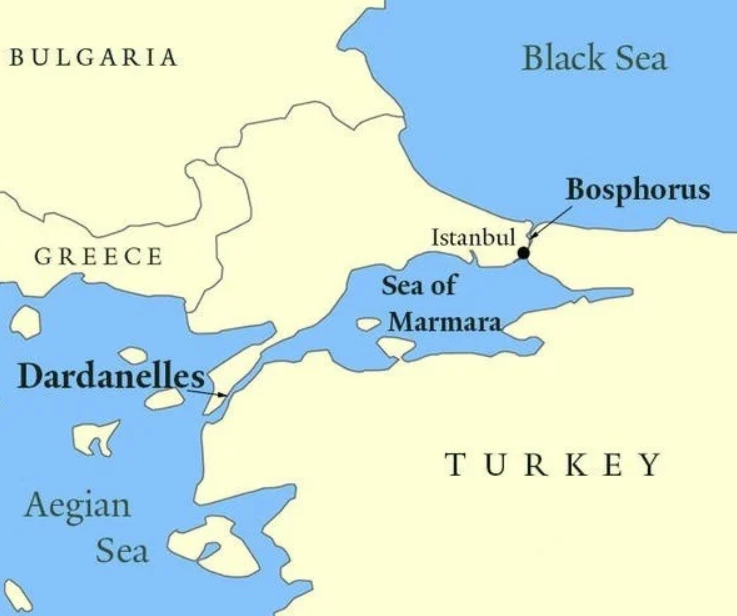
(유럽과 아시아는 좁은 해협으로 분리되어 있는데, 지중해(정확하게는 에게해)쪽 해협을 고대 그리스 시절에는 헬레스폰트(다다넬즈) 해협, 흑해쪽 해협을 보스포러스 해협이라고 부릅니다. 이 두 해협 사이의 다소 넓은 공간은 마르마라(Marmara) 해라고 부르고요. 헬레스폰트라는 이름은 황금양털(Golden Fleece) 전설에 나오는, 나는 양을 타고 가다 바다에 빠져 죽은 헬레(Helle)의 바다라는 뜻입니다. 보스포러스라는 이름은 제우스가 황소로 변신하여 여자를 납치해서 태우고 이 해협을 건넜다는 전설에서 나온 것으로서, 황소(bos) + 건너다 (porus, phorus)라는 조합으로 만들어진 것이랍니다. 다다넬즈라는 이름은 오스만 시절에 지어진 것인데, 그 일대에 있던 Dardanus라는 고대 도시 이름을 딴 성채 때문에 지어졌다고 합니다.) 물론 이스탄불의 제1 명소인 아야 소피아(Hagia Sophia)를 직접 보려는 것이 이번 여행의 가장 큰 목표였습니다. 멋있더군요. 실은 건물 모습만 보면 오스만 투르크가 콘스탄티노플(비잔티움)을 점령한 이후 아야 소피아에 반해서 그 모습에 따라 17세기 초에 새로 지은 모스크인 블루 모스크(Blue Mosque, 정식 명칭은 Sultan Ahmed Mosque)가 더 웅장하고 더 멋있긴 했습니다만, 그래도 약 1500년 전에 지어진 오리지널이라는 무게감은 당할 수 없습니다.
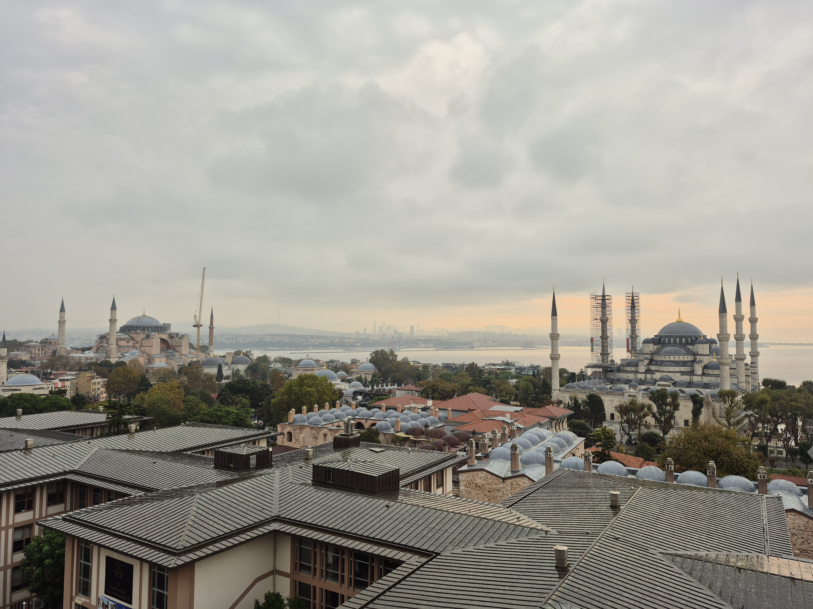
(제가 묵은 호텔방에서 바라본 모습입니다. 왼쪽이 아야 소피아, 오른쪽이 블루 모스크입니다. 저는 Arcadia Blue라는 호텔에 묵었는데, 대단한 고급 호텔은 아니었습니다만 저 풍경 덕분에 매우 인기 있는 호텔이라고 합니다.) 다만 아야 소피아 관광 자체는 상당히 실망스러웠습니다. 1930년대 케말 파샤가 튀르키예를 이슬람 신정통치국이 아닌 세속 국가로 개혁하면서 이후 모스크가 아닌 박물관으로 운영되던 아야 소피아를 튀르키예의 에르도안 대통령이 2020년 다시 모스크로 지정하면서, 무슬림이 아니면 1층에는 아예 내려가지도 못하게 되었고 돔 상단에 설치된 성모 마리아와 아기 예수의 유명한 모자이크 등에는 긴 천을 드리워 가려놓았기 때문입니다. 덕분에 사람은 많고 입장료는 비싸지만 볼 것은 그렇게 많지 않은 그런 명소가 되었습니다.
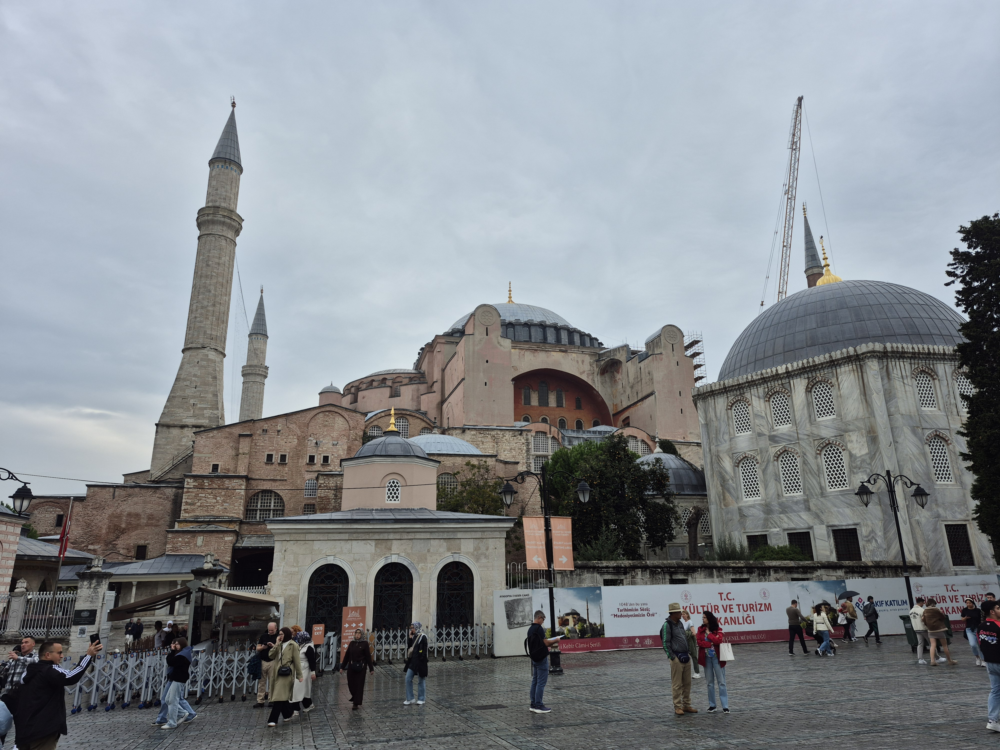
(영어 표기는 Hagia Sophia인데 다들 아야 소피아로 읽길래, Hagia라는 것이 투르크 말인 줄 알았습니다만, 실은 Hagia는 헬라어, 즉 그리스어로서 영어의 holy에 해당하는 단어이고, Sophia는 여성 이름이 아니라 지혜라는 헬라어 단어입니다. 그러니까 저 건물의 이름은 성스러운 지혜라는 뜻입니다. 그리고 원래 헬라어이기 때문에 하기아 소피아로 읽는 것이 맞답니다. 다만 저 스펠링을 투르크식으로 읽으면 아야 소파이가 되는 것이고, 실제로 투르크식으로는 Ayasofya라고 표기하기도 하는 모양입니다. 이건 아야 소피아 뒤쪽인데, 관광객들은 이쪽으로 출입하게 되어 있습니다.) 블루 모스크는 더욱 실망스러웠습니다. 겉에서 보는 모습은 멋있는데, 그냥 딱 거기까지이고, 굳이 안에 들어가서 볼 필요가 없을 정도로 안에는 뭐가 별로 없습니다. 이슬람 사원의 특징이지요. 사실 그거 알면서도 굳이 30분 가령 줄을 서서 부득부득 들어간 이유는 입장료가 공짜이기 때문이었습니다. 하긴, 이때 아니면 제가 언제 실제 모스크 안에 들어가 보겠어요?
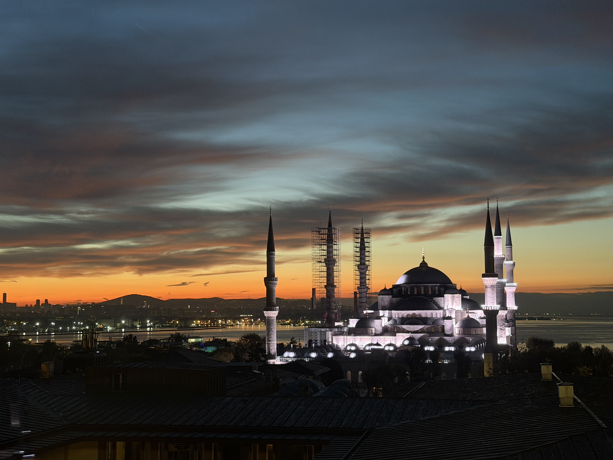
(이건 새벽놀을 배경으로 한 블루 모스크의 모습. 호텔방에서 본 이 모습이 제일 이뻤어요.) 오스만 투르크 제국의 경복궁이라고 할 수 있는 톱카프(Topkapı, 끝에 있는 i는 로마자 i가 아니라 위에 점이 없는 투르크 고유 문자 ı인데, '-이'로 발음이 안되더라고요) 궁전이 가장 실망스러웠습니다. 오스만 투르크의 지배자는 흔히 생각하는 것과는 달리 검소함을 강조했기 때문에, '이건이 정말 동로마 제국보다 더 강력했다는 오스만 투르크의 궁전이 맞나?' 싶을 정도로 소박하다더니, 정말 그랬습니다.
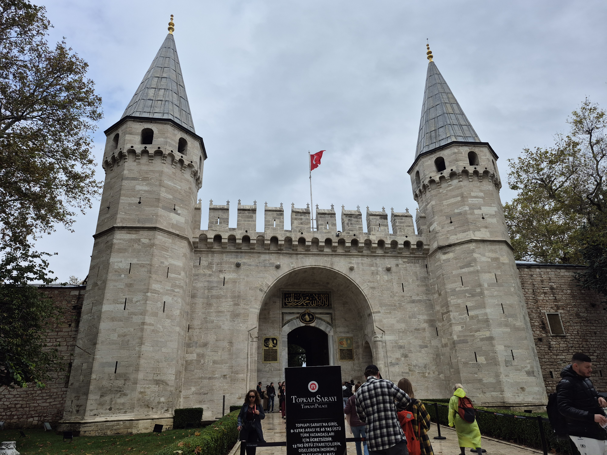 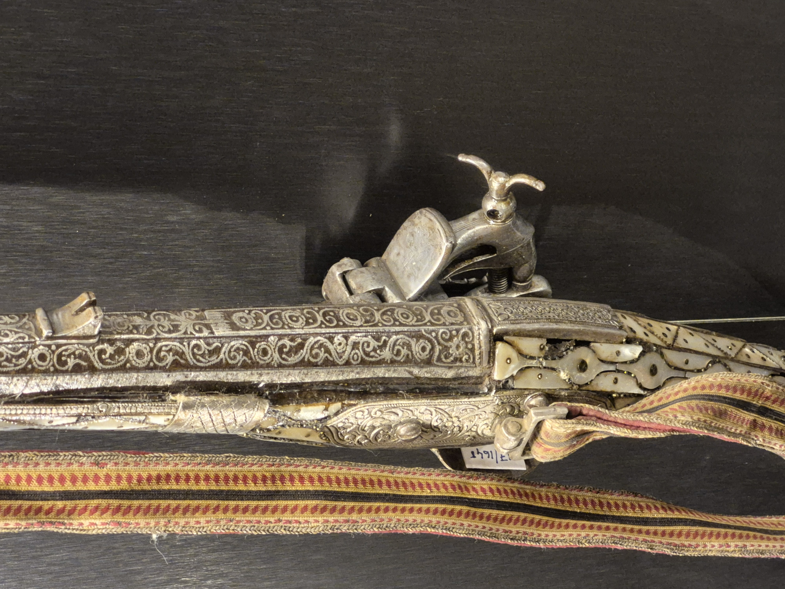 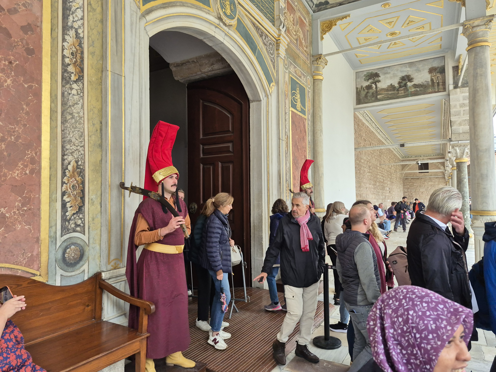 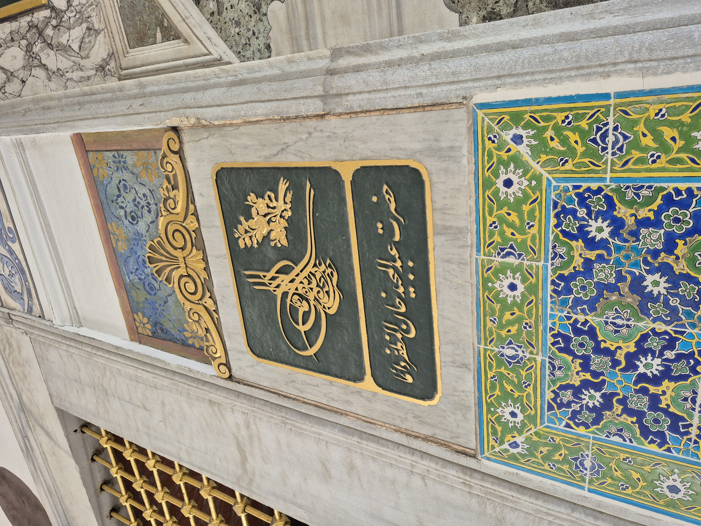
(톱카프 궁전 이모저모... 향후 글에서 또 다룰 일이 없어서 여기 몇 장 주르르 올립니다.)
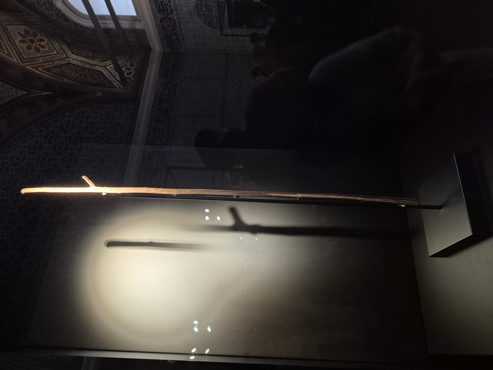
(톱카프 궁전 속 전시물 중 하나인 '모세의 지팡이'. 모세는 물론 예수님 제자인 베드로도 이슬람에서는 나름 중요한 인물이랍니다. 설마 저게 진짜 모세의 지팡이겠나 싶지만, 당대 근동 최고의 권력자인 오스만 투르크의 술탄에게 진품으로 바쳐진 물건이라는 사실이 더 중요하지요. 종교에서는 역사적 진실보다는 사람들이 무엇을 믿는다는 사실이 더 의미를 갖습니다.) 결정적으로 입장료가 너무 비쌌어요. 1인당 8만 몇천원을 내고 들어가야 했는데, 내국인의 6배인가 하는 바가지 요금이었습니다. 뿐만 아니라 아야 소피아 및 톱카프 궁전 등 관광지 일대는 모든 것이 너무나 비싸서, '튀르키예는 환율 덕분에 물가가 싸다더라'라고 잘못 알고 간 제가 정신이 혼미해질 정도로 모든 것이 비쌌습니다. 그러나 의외로 가장 만족스러운 관광지는 루멜리 요새(Rumelihisarı)와, 바로 그 옆의 고급 주거지인 베벡(Bebek)이었습니다. 실은 루멜리 요새에는 들어가지도 못했어요. 버스 타고 찾아갔는데, 하필 그 날이 휴장일이더라고요. 그런데, 그 요새 찾아가는 길목에 보스포러스 해협이 내려다보이는 아주 멋진 두아테페(Duatepe) 공원이 있었습니다. 게다가 공원은 공짜잖아요. 아주 좋았습니다.
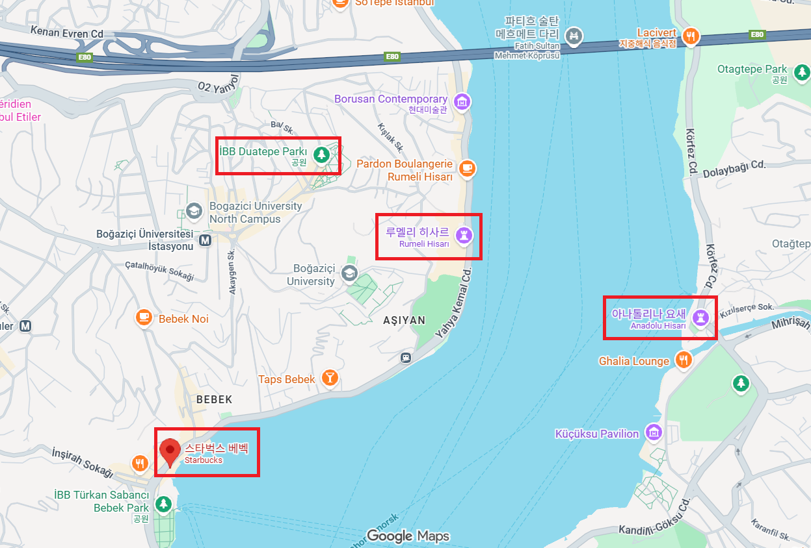
(제가 방문했던 곳이 바로 저기 두아테페 공원이었고, 그 앞에 파티흐 술탄 메흐메트 다리가 있었습니다.)
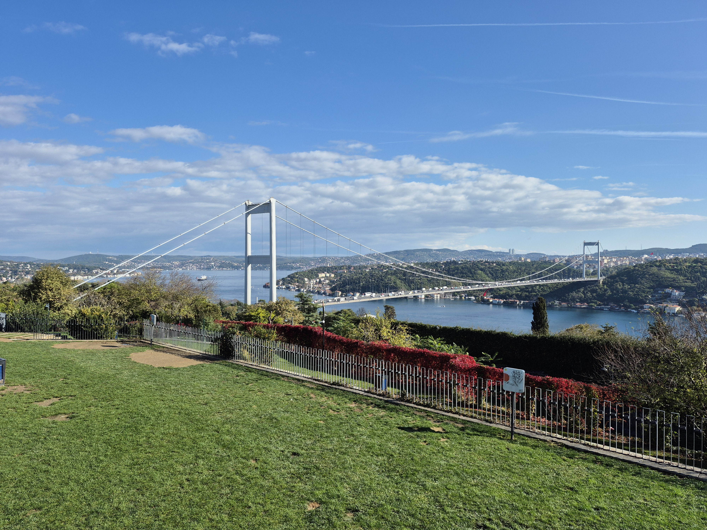
(정말 멋진 공원이었습니다. 저 다리 건너편은 아시아 대륙.)
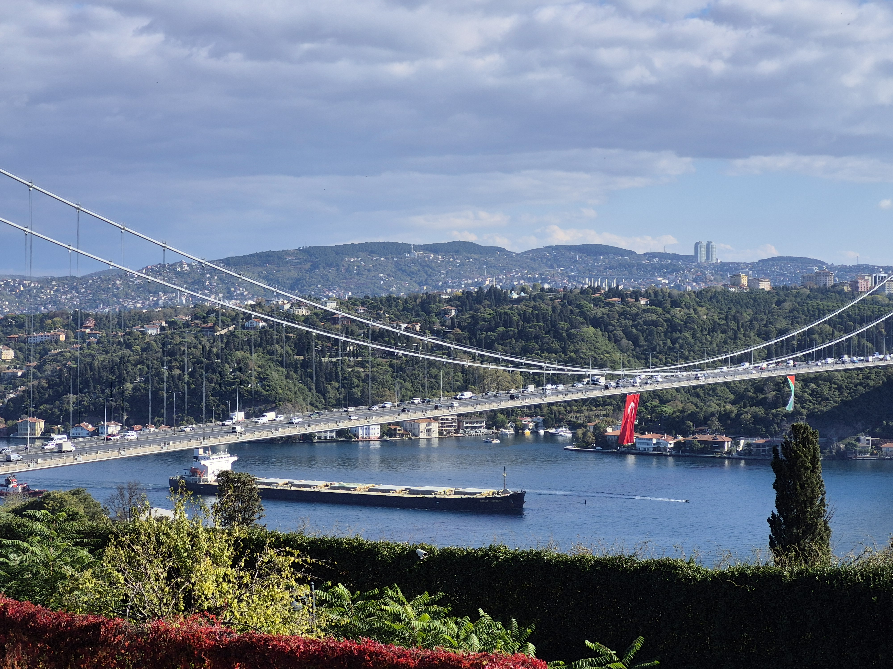
(다리 난간에는 대형 튀르키예 국기와 함께, 대형 팔레스타인 국기가 늘어뜨려져 있더군요.) 그리고 루멜리 요새 바로 인근이 베벡이라는 동네인데, 서울로 따지면 한강을 면한 한남동 UN빌리지 같은 고급 주택단지더군요. 높은 고지인 두아테페 공원에서 걸어서 내려가는 동네 전체가 상당히 이뻤습니다.
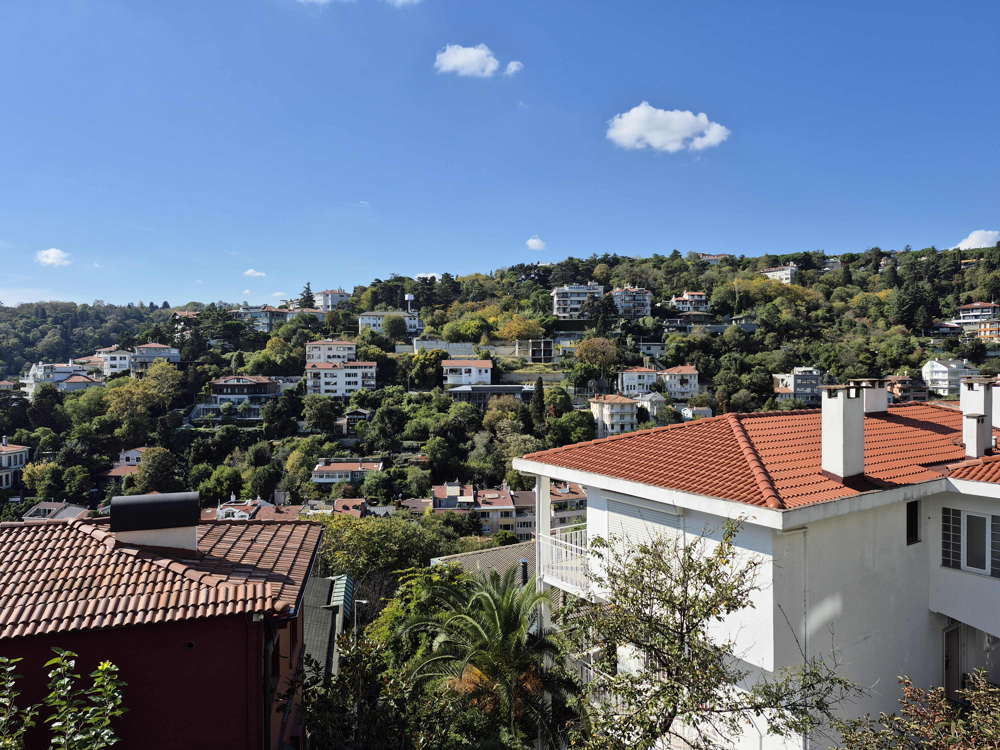 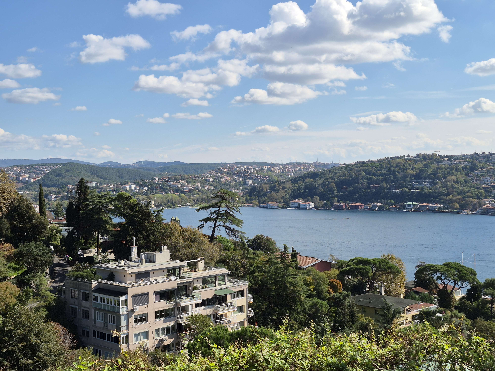
(정말 딱 한남동 UN빌리지 삘...) 그리고, 대망의 목적지인 베벡 스타벅스에 도착했지요. 이 베벡 스타벅스는 자칭 세계에서 가장 경관이 좋은 3대 스타벅스 중 하나라고 하더군요. (나머지 2곳이 어딘지는 전혀 모르겠습니다.) 거리 쪽에서 보면 뭐 딱히 스타벅스 건물이 으리으리하지도 않고 내부가 딱히 깨끗하지도 않았습니다만, 입구 반대쪽인 창가쪽은 보스포러스 해협에 딱 면해있어서 경관이 정말 좋았습니다. 그리고 총 3층 건물 중 층마다 딱 2자리 있는 야외 테라스 자리 중 2층의 야외 테라스 자리를 차지하는 행운을 누린 덕분에, 정말 좋았습니다. 게다가 스타벅스의 커피 가격은 그냥 우리나라 스타벅스 가격과 비슷하여, 부담도 없었고요. 와이프는 이스탄불 최고의 관광지는 베벡 스타벅스라고 하던데, 그 말에 저도 동의할 정도였습니다.
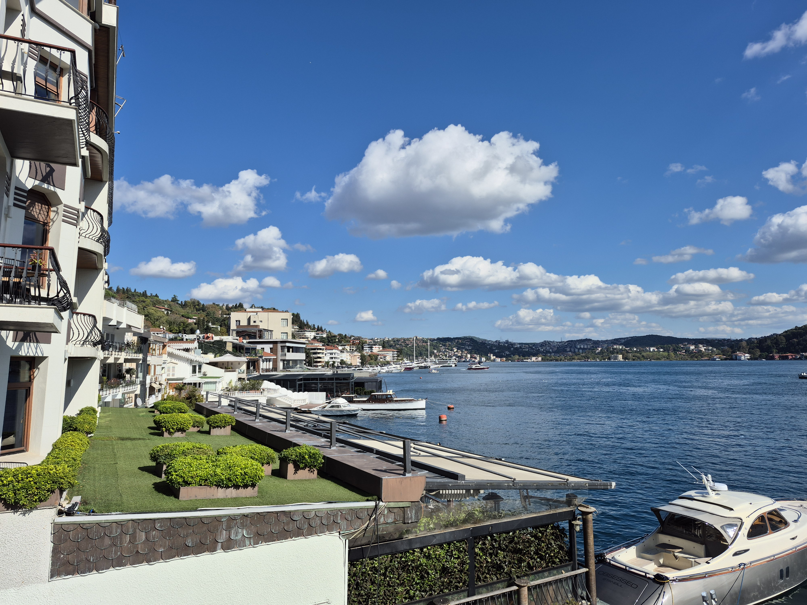
(베벡 스타벅스 2층 야외 테라스에서 바라본 풍경입니다. 스타벅스 3층 건물의 각 층마다 야외 테라스가 딱 2개 있는데, 테라스마다 테이블 1개가 놓여 있습니다.) 거기서 무려 3시간 반이나 앉아 있었어요. 3시간 반이나 앉아 있을 수 있었던 것이, 풍경이 아름다운 것도 있지만, 지나가는 배 구경이 매우 쏠쏠했기 때문이었습니다. 전에 와이프와 북한산성 성문 위에 앉아서 성문 아래로 줄줄이 지나가는 대규모 대학생 단체 등반팀을 내려다보면서 '세상 재미난 것이 사람 구경'이라고 서로 이야기한 적이 있었는데, 눈 앞에 지나가는 다양한 선박들을 구경하는 것도 그에 못지 않게 재미있었습니다. 그런데, 그 배들을 보다보니 뭔가 패턴이 보이더군요. 호텔방에서 보던 패텬과도 일치했습니다. 고대 그리스부터 지속되어온, 그리고 우크라이나 전쟁과도 연관된 그 이야기는 다음 주에 이어집니다.